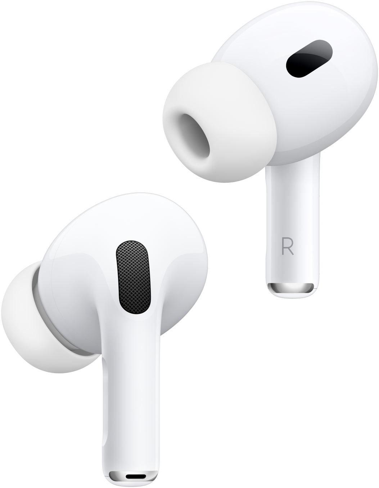

01
AirPods detect
Dual gyroscopes read pitch, roll, and yaw at a high-rate motion stream.
60× / SEC100% Free & Open-Source for macOS
FixMySpine turns the motion sensors already inside your AirPods into a quiet posture coach for Mac. It notices the small drift before it becomes the long day.

01 / The Experience
See how FixMySpine connects to your AirPods, catches micro-slumps, and keeps a detailed log of your spinal posture.

Direct CoreMotion 60Hz gyroscopes track head pitch and roll over Bluetooth Low Energy.

A native, distraction-free macOS menu bar panel with instant recalibration and subtle audio cues.

From 5° aligned posture to 21° slouch, FixMySpine isolates slouching with a 10s grace filter.

7-day local posture analytics, best session streaks, and ergonomic insights saved 100% on-device.
02 / The signal
Most posture tools wait for a visible collapse. FixMySpine watches the tiny angle that arrives first, then gives you a nudge so subtle you barely notice it.
See the signal in motionDual gyroscopes read pitch, roll, and yaw at a high-rate motion stream.
60× / SECA local engine compares your head movement against gravity and your own baseline.
0.1° PRECISIONA gentle cue arrives only after sustained drift. No dashboard, no guilt, no interruption.
SILENT COACH03 / Live instrument
Drag the control. Watch the same signal move from aligned to drift to a slouch alert.
04 / Privacy architecture
Every signal is processed on-device. We don't need a camera, an account, or a cloud dashboard to help you sit better.
05 / Compatibility
Support Open Source
FixMySpine is 100% free and open-source. Your coffees help cover Apple Developer fees, domain hosting, and continuous Swift 6 development.